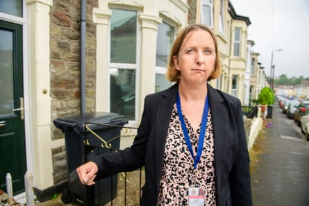
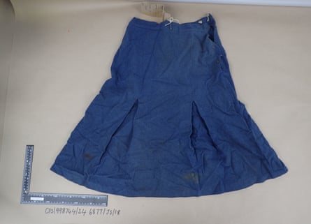
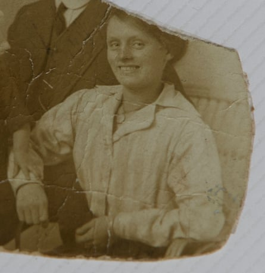

A 92-year-old man who evaded justice for almost 60 years has been convicted of raping and murdering a woman in Bristol, after a review by a cold case police team and scientists .
A jury at Bristol crown court found Ryland Headley guilty of attacking Louisa Dunne, 75, a stranger to him, at her home in the Easton area of the city in June 1967. The verdict came after the trial judge said he would accept a 10-2 majority verdict from them.
Headley was caught after Avon and Somerset police’s major crime review team unearthed DNA links between him and the murder scene in what they codenamed Operation Beatle – a nod to the era in which the crime took place.
Officers believe the 58-year gap between the crime and the conviction may be the biggest in modern English policing history.

Police bodycam footage shows moment of Ryland Headley's arrest – video
The force is working with the National Crime Agency to look at whether Headley may be responsible for any other unsolved attacks over the years.
It can be revealed that Headley was caught after he was arrested in 2012 on suspicion of an unrelated offence. He was not charged but a sample of his DNA was taken.
Last year the cold case team sent the blue skirt that Dunne was wearing when she was attacked and samples of her hair for analysis. Semen was found on them and a DNA profile produced. The profile matched the DNA sample Headley gave in 2012.
Jo Smith at the former home of Louisa Dunne.Photograph: Adrian Sherratt/The Guardian
The conviction means the full story of how Headley was brought to justice 58 years – almost to the day – after Dunne’s rape and murder can be revealed.
Jo Smith, a crime review officer with Avon and Somerset police’s major crime review team, told the Guardian how in 2023 she was asked to take another look at the case. She pulled 17 cardboard boxes of paperwork and exhibits from the archive at police headquarters.
Smith said: “I opened them and went: oh my word, I don’t think these have ever been subject to any modern forensic examination.” She fetched a colleague, they “gloved up” and started to go through the boxes. “We pulled out item by item and made a record of what we had. I had that feeling maybe we were sitting on something.”
The cold case team sent the blue skirt Louisa Dunne was wearing at the time of the attack for analysis last year.Photograph: Avon and Somerset police/PA Media
Last year, exhibits including the skirt and samples of hairs taken from Dunne were sent to a forensic scientist, Andrew Parry. He obtained a profile of the suspected rapist and killer.
Describing the moment she heard this, Smith said: “I had a message from my sergeant. She said: ‘Oh my god, you’ll never guess. Andy Parry’s just found a full DNA profile on Louisa Dunne’s skirt. We’re going to load it to the NDNAD [the national DNA database]. That was 10am and at 3pm she sent me a message: ‘We’ve got a hit.’”
Smith said it was “mind-blowing” when she learned of Headley’s previous convictions. Shortly after the murder, Headley and his family moved from Bristol, and in 1977 he admitted raping two women aged 79 and 84 in their homes in Ipswich, Suffolk.
He was originally jailed for life but at an appeal doctors told the court the rapes arose of sexual frustration arising out of his marriage to an “ambitious and demanding” wife. The sentence was reduced and he spent only about two years in jail.
The cold case team is small and made up mainly of part-timers including retired detectives now working as civilian investigators, but they persuaded their bosses that they had the skills to pursue the investigation. “We were conscious of his [Headley’s] age and that we hadn’t got the luxury of time,” Smith said.
A priority was to prove Headley was in Bristol at the time. One investigator, the former detective sergeant Barry Frayling, spent days at the city’s archives digging up electoral roll and rate payment records that proved Headley and his wife lived in Bristol at the time.
A photograph of Louisa Dunne taken in about 1919.Photograph: Avon and Somerset police/PA Media
The team traced an officer involved in the original investigation, Bob Day, to ask him what he remembered. “He was flabbergasted,” Smith said.
They also found the doctor called when Dunne’s body was found, Norman Taylor. He described the impact the murder had on him and Bristol. “He says the murder lives with him,” Smith said.
In the boxes, they found the statements of Dunne’s neighbours from 1967 who described hearing screams on the night of 27 and 28 June, and Suffolk police provided the statements of Headley’s Ipswich victims. They told how he crept into their rooms and threatened to kill them. “Those ladies have almost given Louisa the voice that she didn’t have,” Smith said.
The team also tracked down Dunne’s relatives and broke the news to them that they had a suspect. Last year, Headley was still living in Ipswich, where neighbours did not know his past and regarded him as a friendly man who doted on his family and had recently taken in a kitten.
Smith, who was there when he was arrested last November, said: “It was surreal. He’s an old man but there wasn’t any bit of me that felt sorry for him. I’ve seen what he did to Louisa.
The investigating officer DI Dave Marchant.Photograph: Adrian Sherratt/The Guardian
“He thought he’d got away with it. But we’ll never stop hunting these people. His actions have caused massive ripples and consequences. This is such a violent horrific crime of a vulnerable old lady in her own home where she should have been safe. It doesn’t matter if it’s 58 years ago or if it’s 58 days ago.”
DI Dave Marchant, of Avon and Somerset police’s major crime review team, said police had never given up on solving the rape and murder. He said: “We should never set a time limit of how far back we’re going to go.”
Marchant hopes the conviction will comfort Dunne’s family members. “There are people who have lived with the pain, lived with the horrible memories. If we’re able to try and bring them some semblance of peace and understanding, that is important.”